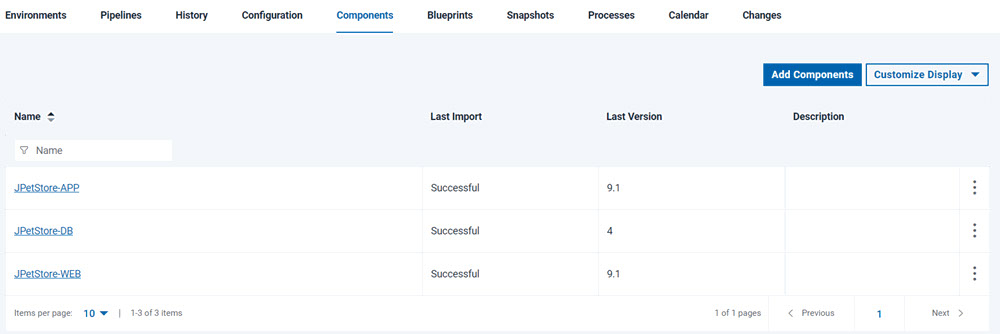

Lesson 3: Creating an application and an environment
Applications are collections of components. Environments represent systems on which you deploy the application components.
Before you begin
Online, as in the
following figure:
About this task
Creating an application
Creating an application involves selecting the components that are in the application.
Procedure
- Click the Applications tab, and then click Create Application.
-
Name the new application
JPetStore, and then click Save. - Add the components to the application:
-
Click the Applications tab, and then click the new application,
JPetStore. - Click the Components tab for the application (not the Components tab at the top of the page), and then click Add Component.
- In the Add a Component window,
in the Select a Component list, select the
three components:
JPetStore-APP,JPetStore-WEB, andJPetStore-DB. - Click Save.
-
Click the Applications tab, and then click the new application,
Results

Creating an environment
Creating an environment involves selecting one or more agent resources and specifying which components are deployed to each agent resource.